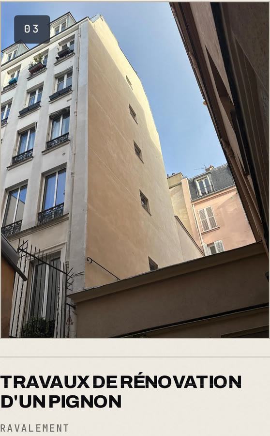
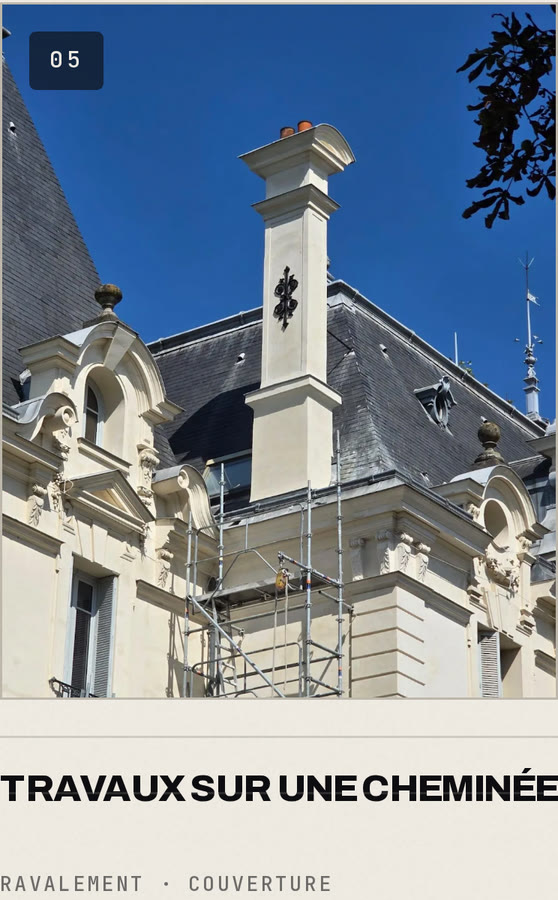
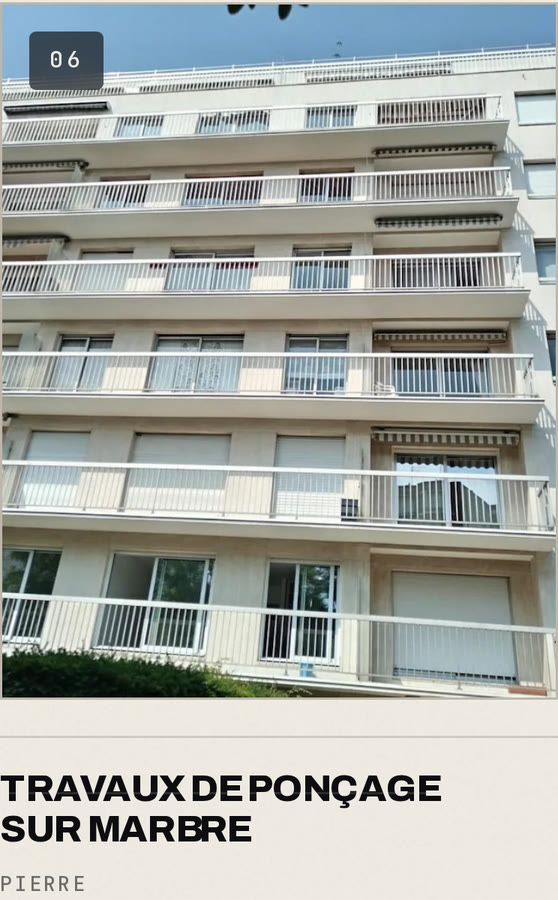
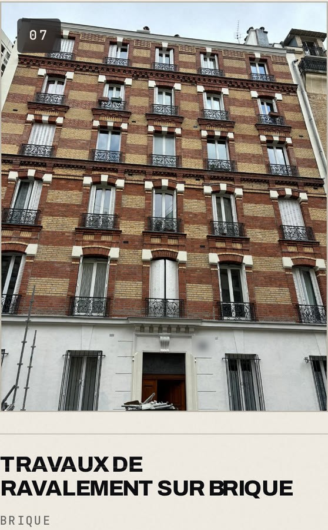

TÉLÉPHONEla lumière dérive seule
ORDINATEURta souris nettoie
components/webgl/StoneWall.tsx
13l'appareil se monte assise par assise à l'arrivée, respire en
⋯
17Le curseur, lui, ravale : la pierre encrassée redevient claire
AUCUN MODÈLE 3D IMPORTÉ
SALE
VRAI PROJET · PMSB
◀◀ REMBOBINAGE
Devis gratuit sous 48 h · lien en bio
Partout en France à distance ·
sur place en Île-de-France
LTNS°
Sur ce site, ta souris
nettoie la façade.